101
Апартаментів різних категорій в номерному фонді
Створюємо відпочинкові проєкти, що поєднують нерухомість, сервіс і інвестиційну цінність у Карпатах.
 03
03
 04
04
Наша робота — це прозорість, високі темпи реалізації та гарантована дохідність для інвесторів. Показники поруч демонструють реальну динаміку розвитку компанії та стабільний попит на наші проєкти.
Апартаментів різних категорій в номерному фонді
Років досвіду на ринку девелопменту та інвестицій
Черги будівництва флагманського гірського комплексу Mandra Petrichor
Млн залучених інвестицій
Інвесторів що стали власниками дольової участі або цілого юніту
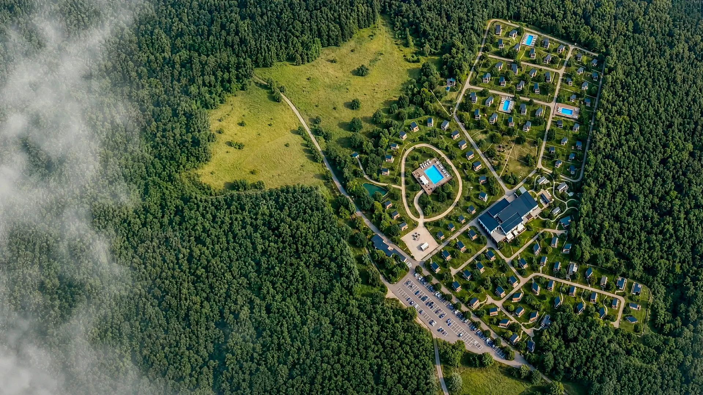
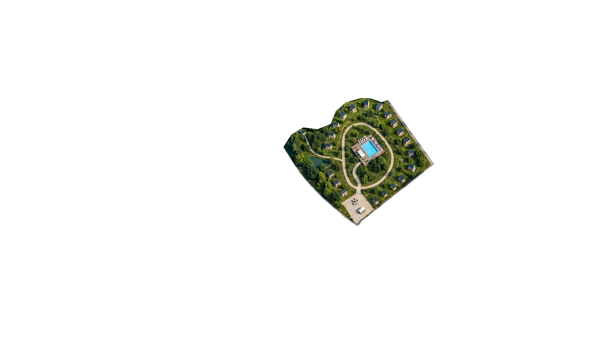
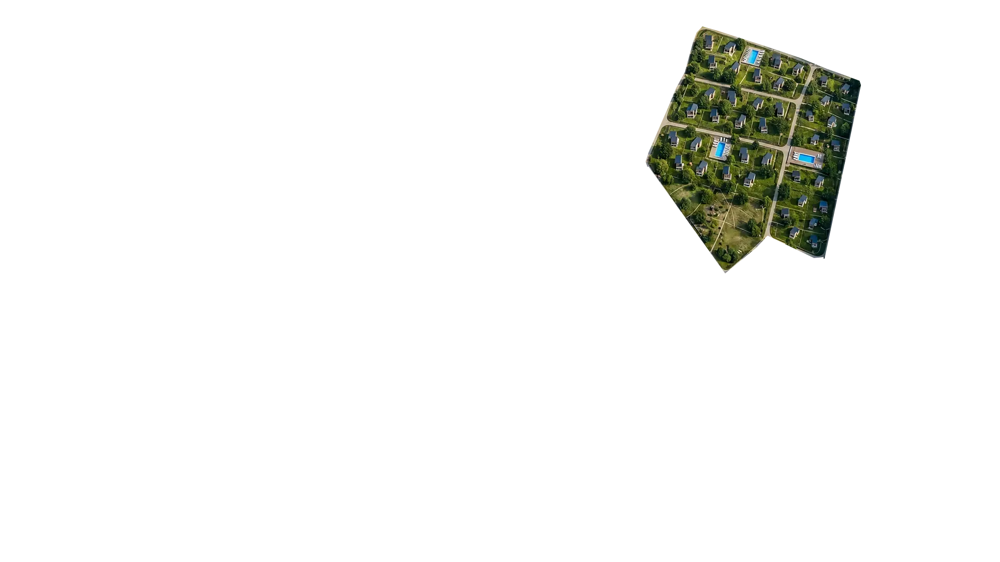
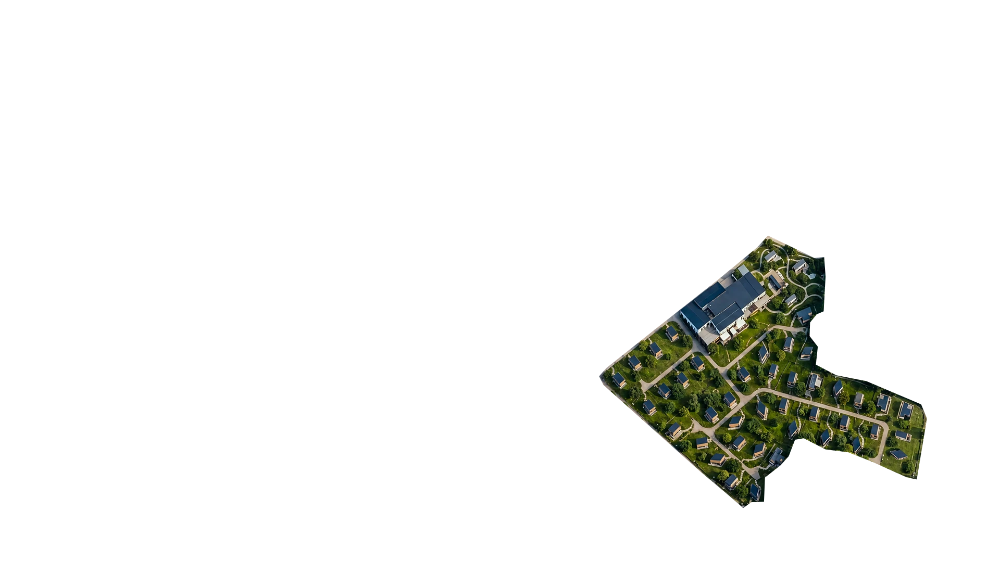
Mandra Petrichor — заміський комплекс у сосновому лісі поблизу Києва, що розвивається як єдина територія з трьома окремими концепціями. Кожна черга орієнтована на свою аудиторію та створює власний сценарій відпочинку. Разом вони формують масштабний комплекс із різними причинами для поїздки протягом року.
Adults Only концепція для пар, приватного відпочинку та нових спільних вражень.
Засновник Ribas Hotels Group і співзасновник Mandra Moments
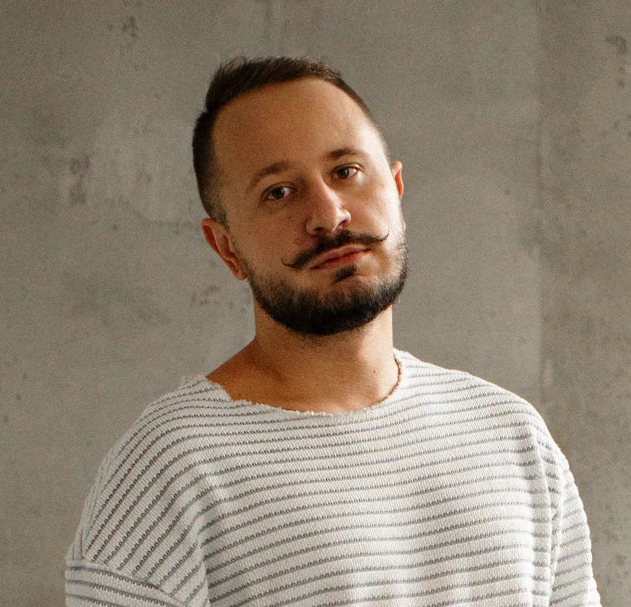
Співзасновник Mandra Moments
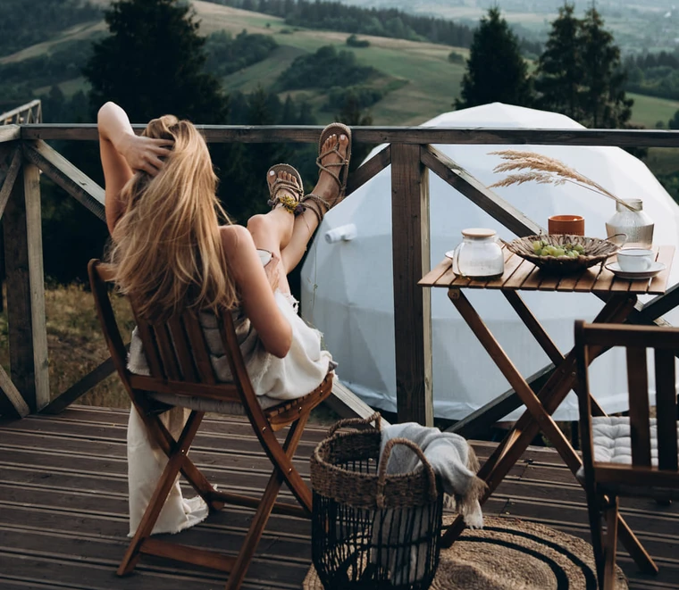
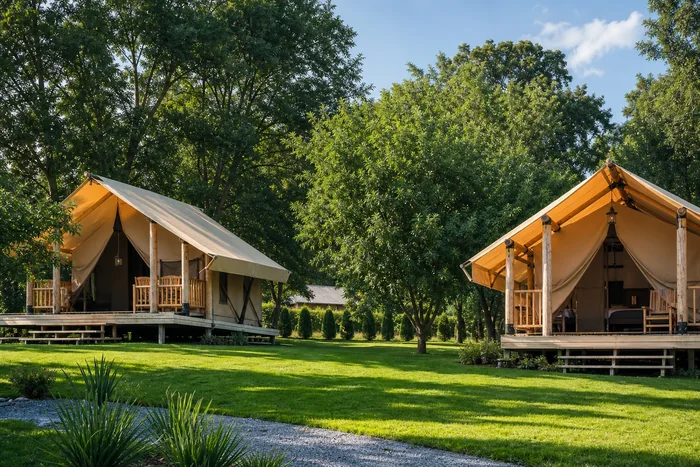
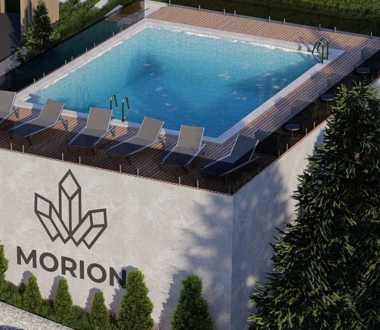
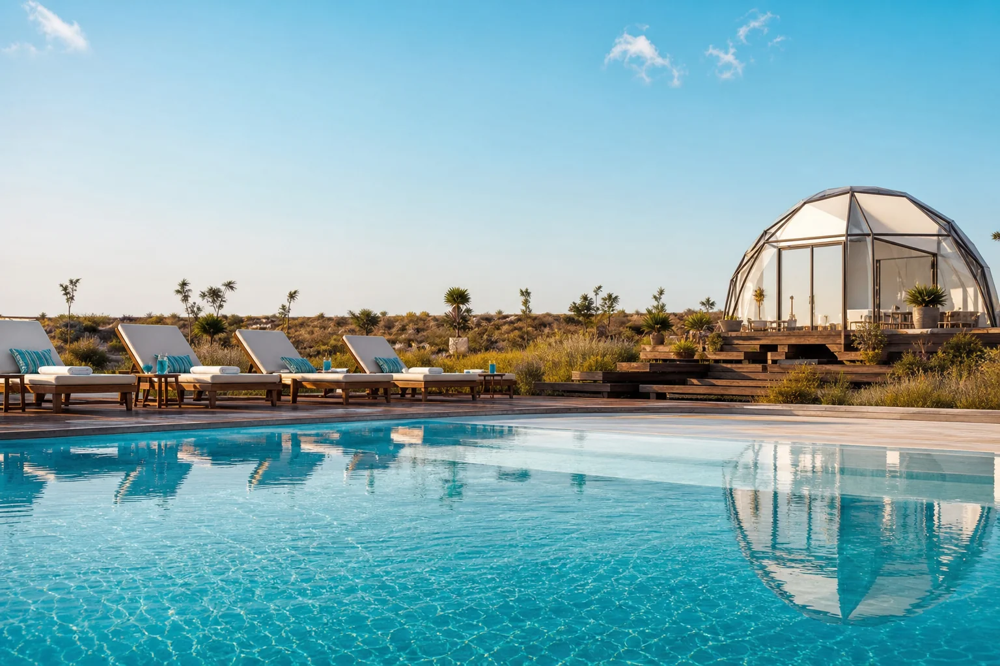
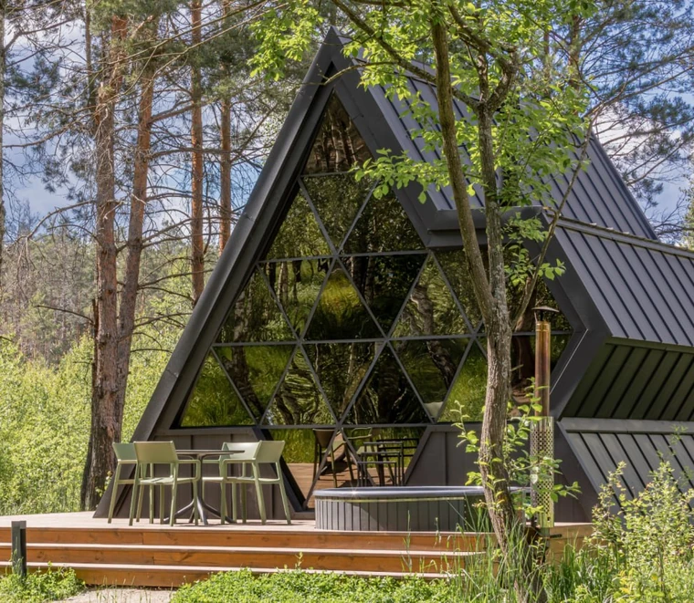
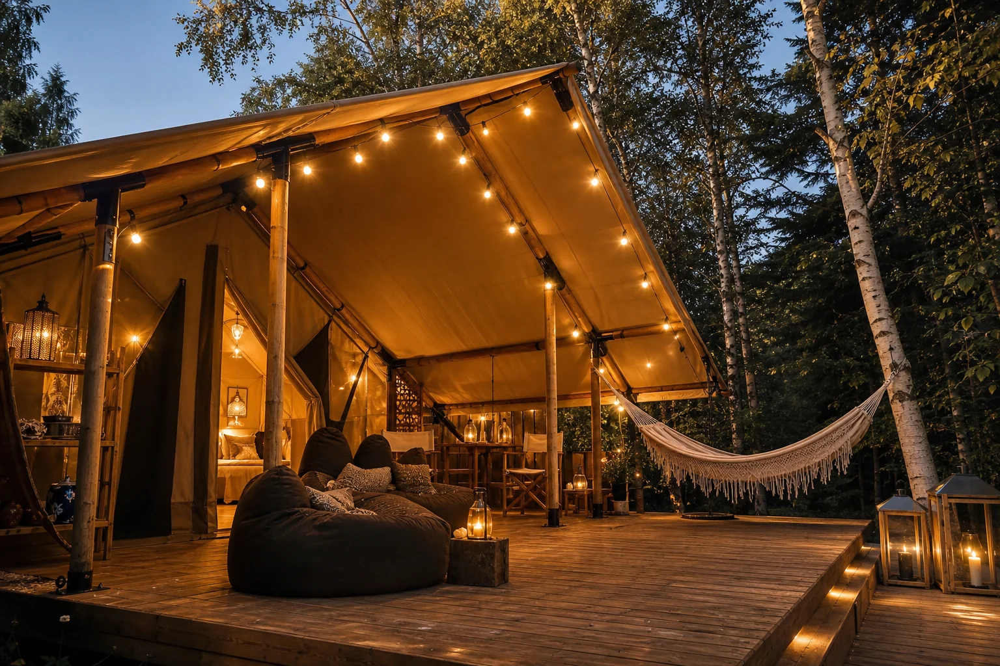
Перша черга введена в експлуатацію та приймає гостей. Усі котеджі цієї черги продані й працюють у складі єдиного готельного комплексу. Це вже не концепція майбутнього, а діючий resort-продукт із командою, сервісом, інфраструктурою та реальним досвідом гостей.
у діючій першій черзі
котеджів продано
вже прийняв комплекс
повторних бронювань
Нові черги ростуть усередині вже працюючої екосистеми: реальна поведінка гостей і попит підказують, якою робити другу й третю чергу.
Тому Mandra Petrichor — не три окремі проєкти, а один комплекс із різними сценаріями відпочинку.
Шукали тихе й затишне місце для відпочинку — і залишилися в повному захваті! Будинки нові, ідеально чисті, з якісною білизною та продуманими дрібницями. Сервіс і клієнтоорієнтованість — на найвищому рівні. Персонал дуже душевний та уважний.
Окремо дякуємо за теплий басейн, тишу без гучних компаній і можливість скористатися пізнім виїздом. Обов'язково повернемося ще! 🤍
Станом на липень 2026 це одне з найкращих місць для тих, хто прагне тиші, природи, басейну, чану та відпочинку без натовпу й шуму. Це про спокій, а не про алкоголь чи гучні вечірки.
Окрема подяка сучасному та уважному персоналу — хлопці й дівчата працюють як бджілки та миттєво реагують на будь-яке прохання. Бажаємо зберегти цю концепцію та першозданний затишок і надалі!
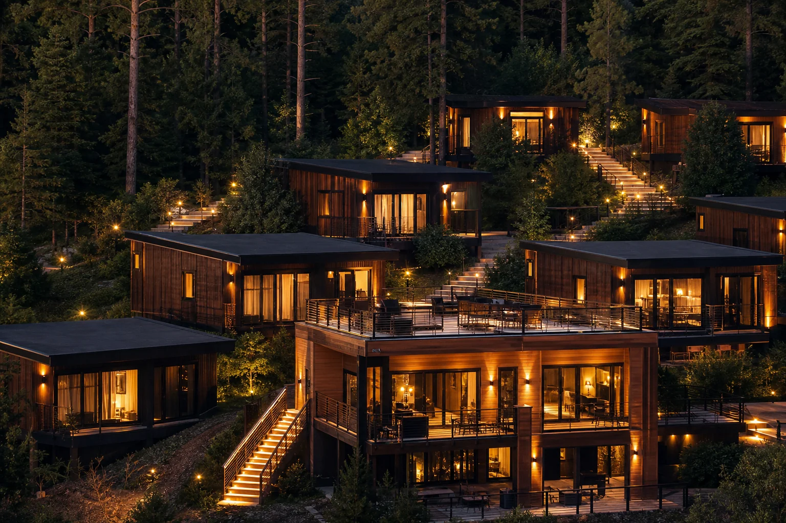
Як працює інвестування з Mandra: від вибору нерухомості до стабільного отримання щоквартального доходу.
Усе максимально просто: ви обираєте найкращий об'єкт, а ми забезпечуємо надійне оформлення.
Комфорт на ваших умовах завдяки гнучкому інвестуванню та прозорим графікам оплати.
Девелопер відповідає за будівництво, комплектацію та підготовку об'єкта до введення в експлуатацію.
Котедж стає частиною єдиного готельного курорту та працює за спільними стандартами мережі Ribas Hotels Group.
Власник отримує прогнозований валютний дохід, а фінансова звітність та аналітика доступні у смартфоні 24/7.
Ви можете приїжджати на приватний відпочинок у своє шале, насолоджуватися природою Карпат і користуватися всіма сервісами курорту.
Mandra Invest — інвестиційний напрям девелопера Mandra Moments, що спеціалізується на створенні та продажу високодохідної відпочинкової нерухомості в Україні. Ми супроводжуємо інвестора на всіх етапах: від аналізу ринку та вибору індивідуального юніту до введення в експлуатацію, співпраці з міжнародним готельним оператором Ribas Hotels Group і регулярної виплати дивідендів у валюті.
Mandra Petrichor — масштабний цілорічний заміський курорт у рекреаційній лісовій зоні, створений як єдина екосистема з трьома автономними концепціями відпочинку: I черга (Ареал спокою), II черга (Сімейний простір для батьків і дітей) та III черга (Adults Only простір для побачень). Комплекс об'єднує понад 40 гектарів природи, термальний SPA-комплекс, басейни, авторські ресторани та івент-простори.
Так, перша черга комплексу Mandra Petrichor уже введена в експлуатацію, успішно працює та щодня приймає гостей. Усі котеджі першої черги були повністю викуплені приватними інвесторами та демонструють стабільно високу заповнюваність (понад 2 900 прийнятих гостей, рейтинг 4.9★ у Google Reviews). Це дає новим інвесторам можливість побачити реальний, діючий бізнес на власні очі перед інвестуванням у наступні черги.
Операційне управління курортом здійснює Ribas Hotels Group — провідний міжнародний готельний оператор із портфелем понад 50 об'єктів. Ribas бере на себе повний цикл щоденного сервісу: маркетинг, динамічне ціноутворення, залучення гостей через світові системи бронювання, професійний клінінг, догляд за майном інвестора та щомісячну фінансову звітність.
Архітектурну концепцію, майстер-план та дизайн інтер'єрів розробляють визнані лідери індустрії гостинності: авторитетна архітектурна студія YOD Group та бюро TEMO Hotel Design у тісній синергії з девелоперською командою Mandra Moments. Кожен будинок спроєктовано за принципами органічної архітектури, з використанням екологічних локальних матеріалів та панорамним склінням із видом на дику природу.
Наразі відкриті продажі юнітів другої та третьої черг Mandra Petrichor (дизайнерські шале та вілли площею від 42 до 110 м² з власними терасами, чанами або басейнами). Доступні як повне право власності на окремий котедж із земельною ділянкою, так і формати дольової участі. Для інвесторів діють індивідуальні програми безвідсоткового розтермінування від девелопера.
Наш консультант надасть вам безкоштовну допомогу
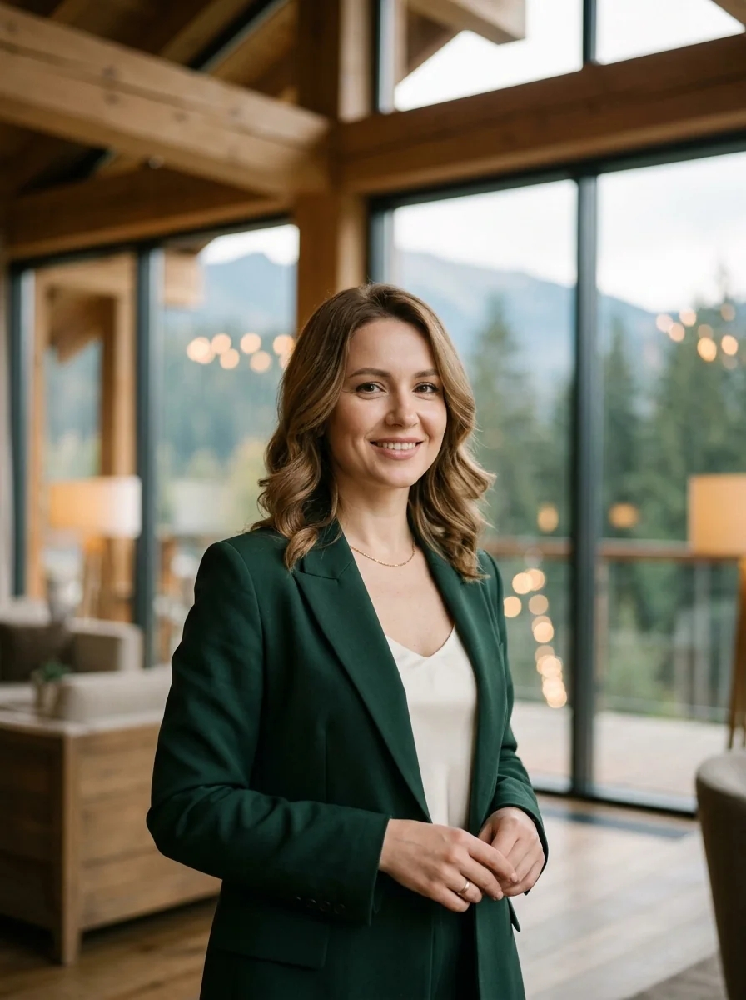
Менеджер по роботі з клієнтами